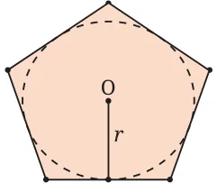
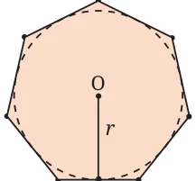
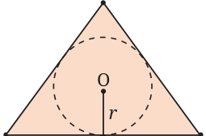
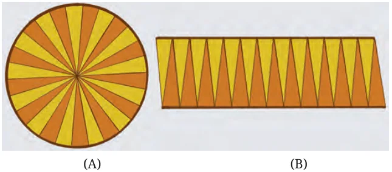
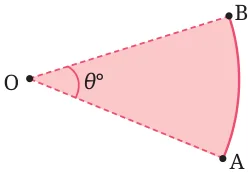
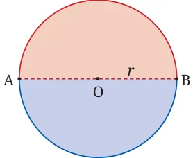
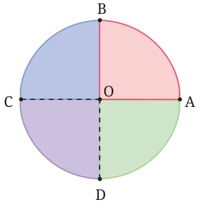

<!DOCTYPE html>
<html lang="en">
<head>
<meta charset="UTF-8">
<meta name="viewport" content="width=device-width,initial-scale=1">
<title>6.10 Area of a Circle — Measuring Space Perimeter and Area</title>
<meta name="description" content="Class 9 Mathematics · Measuring Space Perimeter and Area · 6.10 Area of a Circle">
<link rel="icon" href="data:image/svg+xml,<svg xmlns='http://www.w3.org/2000/svg' viewBox='0 0 100 100'><text y='.9em' font-size='90'>📘</text></svg>">
<link rel="stylesheet" href="../../../assets/book.css">
<link rel="stylesheet" href="https://cdn.jsdelivr.net/npm/katex@0.16.11/dist/katex.min.css" crossorigin="anonymous">
</head>
<body>
<header class="topbar">
<div class="topbar-in">
  <div class="crumb">
    <span class="c1"><a href="../../../index.html">Library</a> · <a href="../../index.html">Class 9 Mathematics</a></span>
    <span class="c2">Measuring Space Perimeter and Area · 6.10 Area of a Circle</span>
  </div>
  <a class="tb-btn" data-nav="prev" href="../../06-measuring-space-perimeter-and-area/11-exercise-6.2/index.html" title="Exercise 6.2">←</a>
  <details class="drawer"><summary class="tb-btn" title="Sections in this chapter">☰</summary>
<div class="drawer-panel"><div class="dh">Measuring Space Perimeter and Area</div><a href="../01-chapter-opener/index.html">Chapter opener</a><a href="../02-perimeter-of-a-shape-6.1/index.html">6.1 Perimeter of a Shape</a><a href="../03-perimeter-of-a-circle-the-c-d-ratio-6.2/index.html">6.2 Perimeter of a Circle — The C / D Ratio</a><a href="../04-length-of-an-arc-of-a-circle-6.4/index.html">6.4 Length of an Arc of a Circle</a><a href="../05-problems-puzzles-and-paradoxes-on-perimeter-6.5/index.html">6.5 Problems, Puzzles, and Paradoxes on Perimeter</a><a href="../06-exercise-6.1/index.html">Exercise 6.1</a><a href="../07-area-of-a-rectangle-6.6/index.html">6.6 Area of a Rectangle</a><a href="../08-area-of-a-parallelogram-6.7/index.html">6.7 Area of a Parallelogram</a><a href="../09-area-of-a-triangle-6.8/index.html">6.8 Area of a Triangle</a><a href="../10-squaring-a-rectangle-6.9/index.html">6.9 Squaring a Rectangle</a><a href="../11-exercise-6.2/index.html">Exercise 6.2</a><a href="../12-area-of-a-circle-6.10/index.html" aria-current="page">6.10 Area of a Circle</a><a href="../13-exercise-6.3/index.html">Exercise 6.3</a></div></details>
  <a class="tb-btn" data-nav="next" href="../../06-measuring-space-perimeter-and-area/13-exercise-6.3/index.html" title="Exercise 6.3">→</a>
  <button class="tb-btn" data-theme-toggle title="Toggle light / dark" aria-label="Toggle light or dark theme">◐</button>
</div>
<div class="progress"><span style="width:78.0%"></span></div>
</header>
<main class="wrap">
<div class="sec-head">
  <p class="eyebrow"><a href="../index.html">Chapter 6 · Measuring Space Perimeter and Area</a></p>
  <h1>6.10 Area of a Circle</h1>
  <p class="sec-meta">Textbook pages 26–31 · 11 figures</p>
</div>
<article class="prose">
<p>A circle is an extremely basic shape; it is easy to draw if we have a rope and a peg to which the rope can be tied. Human beings have used the circular shape in their settlements, buildings and tools for thousands of years.</p>
<h2 id="s-think-and-reflect">Think and Reflect</h2>
<p>Why were human beings so fond of using circular shapes? Was this only for practical reasons, or could there have been other reasons too? What kinds of uses have human beings found for the circular shape?</p>
<p>Early on, human beings faced the challenge of finding the area A enclosed by a circle. They may have needed, for example, to work out how much grain can be kept in a cylindrical tower (which has a circular cross section), or how much area is occupied by a circular garden or a circular building. They needed such data for planning out their cities, for tax purposes, etc. Early societies understood very well that the area A must be proportional to the square of the circumference C. Let’s see why this is so.</p>
<ul class="qlist">
<li><span class="mk">•</span><span class="lt">Suppose we are given a square. Let its side be a. It has perimeter</span></li>
</ul>
<p>\(P = 4a\) and area \(A = a\) . So the ­ratio P : \(A = (4a\) ) : \(a = 16a\) : \(a =\)</p>
<p>16 : 1. So the ratio P : A is 16 : 1 for all squares; the ratio does not depend on the size of the square - it is the same for all squares.</p>
<ul class="qlist">
<li><span class="mk">•</span><span class="lt">Consider an equilateral triangle with side a. Its perimeter is \(P = 3a\)</span></li>
</ul>
<p>and its area is \(A = 4 a\) . So \(P^{2}\): \(A = (3a)\) : \(4 a = 9a\) : \(4 a = 36\) : 3. So the ratio \(P^{2}\): A is 36 : 3 for all equilateral triangles; the ratio does not depend on the size of the equilateral triangle - it is the same for all equilateral triangles.</p>
<ul class="qlist">
<li><span class="mk">•</span><span class="lt">Similarly, for various shapes, as we change the scale, the ratio</span></li>
</ul>
<p>P : A stays fixed. The value of the ratio depends only on the shape, not on its scale. Such reasoning suggests that for a circle too, if \(C =\) circumference</p>
<p>and \(A =\) area, the ratio C : A must be some fixed constant. But what is this constant? Well before 1500 BCE, the Babylonians had found through actual measurement that the constant is close to 12; that is, \(C^{2}\): \(A \approx 12\) : 1. So,</p>
<p>their formula for the area of a circle was \(A \approx C12\) . Around 1500 BCE, the ancient Egyptians came up with another such formula which resembles the one described above but is much more</p>
<p>accurate: \(A \approx\)  \(\frac{8d}{9}\)  where d is the diameter of the circle. Since \(d = 2r\),</p>
<p>this may also be written as \(A \approx\)  \(\frac{64}{81}\) 4r , i.e., \(A \approx\)  \(\frac{256}{81}\) r . Amazingly, the same formula appears in the Baudhāyana Śhulbasūtra (800 BCE) via a geometric method for constructing a square with (approximately) the same area as a circle.</p>
<h3 id="s-the-familiar-formula-in-use-today">The Familiar Formula in Use Today</h3>
<p>The ancient Greeks also knew that \(\frac{A}{r2}\) is some constant - but did not know what that constant was. Two different civilisations approximated</p>
<div class="mathblock"><p>it to be \(\frac{256}{81}\) .</p></div>
<p>Finally, in c. 250 BCE, Archimedes showed that the constant is exactly \(\pi\) (i.e., the same constant that occurs in the formula for</p>
<p>perimeter of a circle!); so, \(A = \pi r\) . He expressed the formula this way: “The area of a circle is equal to the area of a right angle triangle with sides equal to the radius and the circumference of the circle”. That is,</p>
<p>1 1 _{2} Areaofcircle \(= 2 \times\) circumference \(\times\) radius \(= 2 \times 2 \pi r \times r = \pi r\) .</p>
<p>The proof given by Archimedes is very clever. It is based on a property shared by all regular polygons: The area enclosed by a regular polygon is equal to half the perimeter \(\times\) the radius of the circle that fits tightly within the polygon (Fig. 6.36). (The proof of this formula is an extension of the proof of the formula of the area of a triangle in terms of the radius of its incircle.)</p>
<figure class="fig"><figcaption>Fig. 6.36: Area of a regular polygon = × perimeter of the polygon × radius</figcaption></figure>
<figure class="fig side-fig"></figure>
<figure class="fig"></figure>
<div class="mathblock"><p>\(\frac{1}{2}\)</p></div>
<p>Archimedes did a ‘thought experiment’; he asked himself what happens if the number of sides of the regular polygon gets larger and</p>
<p>larger. Working out the details, he arrived at the result \(A = \pi r\) . Here perhaps is the most visual and easy-to-understand</p>
<p>explanation for why the area of a circle of radius r has area \(\pi r\) . This beautiful visual explanation for the area of the circle was first discovered by Nīlakaṇṭha Somayājī (c. 1500) in his commentary on the Āryabhaṭīya:</p>
<figure class="fig wide"><figcaption>Fig. 6.37: The slices can be rearranged to form a parallelogram-like structure</figcaption></figure>
<p>As the slices become smaller and smaller, the arcs in Fig. 6.37B become more and more closer to a line. This makes the figure more and more closer to a parallelogram with base = half the circumference (why?) \(= \pi r\), height = radius r. This gives a way to argue that the area of the circle is equal to the area of a parallelogram!</p>
<p>Area of the circle = Area of the parallelogram = base \(\times\) height \(= \pi r\) .</p>
<h3 id="s-6-10-1-area-of-sector-of-a-circle">6.10.1 Area of Sector of a Circle</h3>
<p>A sector of a circle is the region bounded by an arc and the two radii containing the endpoints of the arc. The area within a sector of a circle may be found the same way that we found the length of a circular arc. Examine Fig. 6.39 and</p>
<figure class="fig side-fig"><figcaption>Fig. 6.40.</figcaption></figure>
<p class="caption">Fig. 6.38: Sector of a circle</p>
<figure class="fig"></figure>
<p>By symmetry, we see that the area of a</p>
<p>semicircular disc is  \(\frac{1801}{3602}\)  = of the area</p>
<aside class="sidenote"><p>th</p></aside>
<p>of the circle, i.e., \(\frac{1}{2} \pi r\) . We could use the reflection symmetry of the circle to understand this result.</p>
<p class="caption">Fig. 6.39: Area of a semi-circular disc</p>
<figure class="fig"></figure>
<p>By symmetry, we see that the area of a</p>
<p>quarter circular disc is  \(\frac{}{3604} 90\)  \(= 1\) of the area</p>
<aside class="sidenote"><p>th</p></aside>
<p>of the circle, i.e., \(\frac{1}{4} \pi r\) . We could also use the quarter-turn symmetry of the circle to understand this result.</p>
<p class="caption">Fig. 6.40: Area of a quarter circular disc</p>
<p>Examining the above, we immediately obtain the desired formula for a general sector: Formula for the area of a sector of a disc in terms of the angle it subtends at the centre of the circle If the arc is AB, and it subtends an angle of θ \(^{\circ}\) at the centre O of the circle (see Fig. 6.38), then the area of the sector is</p>
<div class="mathblock"><p>\(\pi r \times \frac{θ}{360}\) .</p></div>
<aside class="sidenote"><p> 2</p></aside>
<p>Note how we have used the rotational symmetry of a circle in deducing these formulas. Related to a sector, there is a part of the circular region called a segment. A segment of a circle is the region bounded by an arc of the circle and the chord joining the endpoints of the arc.</p>
<figure class="fig"></figure>
<p>Unless stated otherwise, use the approximation \(\frac{22}{7}\) for \(\pi\) .</p>
<ul class="qlist">
<li><span class="mk">1.</span><span class="lt">Find the area of a sector of a circle with radius 7 cm if the angle of</span></li>
</ul>
<p>the sector is \(60 ^{\circ}\) .</p>
<ul class="qlist">
<li><span class="mk">2.</span><span class="lt">Find the area of a quadrant of a circle whose circumference is 44 cm.</span></li>
<li><span class="mk">3.</span><span class="lt">The length of the minute hand of a clock is 7 cm. Find the area</span></li>
</ul>
<p>swept by the minute hand in 10 minutes.</p>
<ul class="qlist">
<li><span class="mk">4.</span><span class="lt">A chord of a circle of radius 10 cm subtends \(90 ^{\circ}\) at the centre. Find</span></li>
</ul>
<p>the area of the corresponding: (i) minor sector (that subtends \(90 ^{\circ}\) at the centre), and (ii) major sector (that subtends \(270 ^{\circ}\) at the centre). (Use \(\pi \approx 3.14.)\)</p>
<ul class="qlist">
<li><span class="mk">5.</span><span class="lt">A chord of a circle of radius 15 cm subtends an angle of \(60 ^{\circ}\) at the</span></li>
</ul>
<p>centre of the circle. Find the areas of the corresponding minor and major segments of the circle. (Use \(\pi \approx 3.14\) and \(3 \approx 1.73.)\)</p>
<ul class="qlist">
<li><span class="mk">6.</span><span class="lt">A car has two wipers which do not overlap. Each wiper has a blade</span></li>
</ul>
<p>of length 28 cm and sweeps through an angle of \(120 ^{\circ}\) . Find the total area cleaned at each sweep of the blades.</p>
<p>*7. A chord of a circle of radius r subtends an angle of \(60 ^{\circ}\) at the centre of the circle. Show that the area of the corresponding minor _{2} 3  segment of the circle is equal to \(\pi r \frac{1}{6}\)  \(- 4\)  .   *8. An equilateral triangle is inscribed in a circle of radius r. Show that the ratio of the area of the triangle to the area of the circle is</p>
<div class="mathblock"><p>equal to \(\frac{33}{4 \pi\) } \(\approx 0.413\).</p></div>
<p>*9. A square is inscribed in a circle of radius r. Show that the ratio of the area of the square to the area of the circle is equal to \(\frac{2}{ \pi\) } \(\approx 0.637\). *10. A hexagon is inscribed in a circle of radius r. Show that the ratio of the area of the hexagon to the area of the circle is equal to \(\frac{33}{2 \pi\) } \(\approx 0.827\). Can you see why the answer is exactly twice the answer to Question 8?</p>
</article>
<nav class="pager"><a class="" data-nav="prev" href="../../06-measuring-space-perimeter-and-area/11-exercise-6.2/index.html"><span class="dir">← Previous</span><span class="t">Exercise 6.2</span><span class="ch">Measuring Space Perimeter and Area</span></a><a class="nx" data-nav="next" href="../../06-measuring-space-perimeter-and-area/13-exercise-6.3/index.html"><span class="dir">Next →</span><span class="t">Exercise 6.3</span><span class="ch">Measuring Space Perimeter and Area</span></a></nav>
</main><footer class="site">Generated from the source textbook PDFs · text, figures and exercises belong to their respective publishers.</footer><script defer src="https://cdn.jsdelivr.net/npm/katex@0.16.11/dist/katex.min.js" crossorigin="anonymous"></script>
<script defer src="https://cdn.jsdelivr.net/npm/katex@0.16.11/dist/contrib/auto-render.min.js" crossorigin="anonymous"
  onload="renderMathInElement(document.body,{delimiters:[
    {left:'\\(',right:'\\)',display:false},
    {left:'$$',right:'$$',display:true},
    {left:'\\[',right:'\\]',display:true}],throwOnError:false,ignoredTags:['script','noscript','style','textarea','pre','code']})"></script>
<script src="../../../assets/book.js"></script>
</body>
</html>
